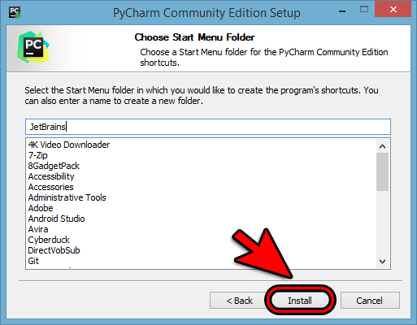
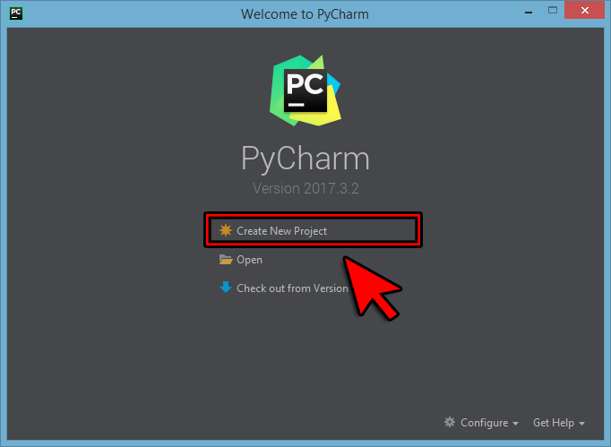

Pythonخطوات تحميل و تنصيب و إنشاء مشروع جديد في برنامج PyCharm
خطوات تحميل و تنصيب برنامج PyCharm
أدخل إلى رابط تحميل برنامج PyCharm من الموقع الرسمي أنقر هنا »
قم بالنقر على زر تحميل آخر إصدار مجاني متوفر.
أنقر على Save File لكي يبدأ التحميل.
بعد أن يكتمل التحميل, قم بفتح الملف لتبدأ بتنصيب الأدوات.
أنقر بزر الفأرة الأيمن على الملف, ثم أنقر على Run as administrator
أنقر على الزر Next لتبدأ خطوات تنصيب البرنامج.
أنقر على الزر Next ليبدأ تنصيب البرنامج في المسار المحدد.
ضع علامة صح في نفس المربعات التي قمنا باختيارها إذا كنت لا تعرف معناهم ثم أنقر على الزر Next.
في حال كنت تعرف معنى هذه الخيارات, يمكنك تحديد ما شئت منهم.
أنقر على الزر Next.

أنقر على الزر Next ليبدأ التنصيب الفعلي للبرنامج في المسار المحدد و بناءاً على الخيارات التي تم تحديدها.
بعد أن تم تنصيب البرنامج بنجاح, أنقر على الزر Finish للخروج.
فتح برنامج الـ PyCharm و إختيار الألوان المناسبة
بعد تنصيب البرنامج, يمكنك فتح البرنامج بكل سهولة بطريقتين:
الطريقة الأولى, هي بالنقر مرتين على أيقونة البرنامج التي تم إضافتها على سطح المكتب ( أي على الـ Desktop ).
الطريقة الثانية, هي بالتوجه لقائمة نظام التشغيل الأساسية و كتابة PyCharm في مربع البحث.
عندما تفتح البرنامج للمرة الأولى يطلب منك تحديد ألوان البرنامج المفضلة لديك.
نحن ننصح باختيار الـ Darcula لأنه مريح أكثر للنظر.
بعد إختيار إحداهما قم بالنقر على الزر Skip Remaining and Set Defaults لكما في الصورة التالية.

الآن ستلاحظ أنه سيسألك إذا كنت ترغب بإنشاء مشروع جديد.
في حال أردت إنشاء مشروع جديد, قم بتحديد إسم المشروع ( أي إسم المجلد الأساسي الذي ستضع فيه الملفات ) مكان الإسم untitled الذي كان سيوضع كإسم إفتراضي للمشروع.
في الوقت الحالي لا تقم بإنشاء مشروع لأننا سنفعل هذا بعد قليل. إذاً إضغط على الزر Cancel.
خطوات إنشاء مشروع جديد في PyCharm
إفتح البرنامج.
إضغط على أيقونة Create New Project.
إنتبه: إذا كان برنامج الـ PyCharm مفتوحاً و تريد إنشاء مشروع جديد فيه, توجه إلى القائمة العلوية و أنقر على File ثم أنقر على New Project.

الآن تجد أنه يطلب منك تحديد إسم المشروع مكان الإسم untitled الذي كان سيوضع كإسم إفتراضي للمشروع.
قم بوضع أي إسم للمشروع مثل myapp ثم أنقر Create.
قم بإغلاق نافذة المساعدة.
أنقر بزر الفأرة الأيمن على إسم المشروع ثم مرر الفأرة فوق الكلمة New ثم أنقر على Python File حتى تستطيع إنشاء ملف بايثون جديد في المشروع.
قم بوضع إسم للملف مثل Test ثم أنقر على الزر OK حتى يتم إنشاء الملف في المشروع.
الآن يمكنك كتابة أي كود بلغة بايثون بداخل الملف Test.py.
أكتب الأمر print("Hello World!" في الملف.
ثم أنقر Ctrl + S ليتم حفظ الملف.
ثم أنقر Shift + F10 ليتم تشغيل الملف.

 محرر الويب
محرر الويب نظام الألوان
نظام الألوان محول الوحدات
محول الوحدات محلل عناوين الشبكات
محلل عناوين الشبكات